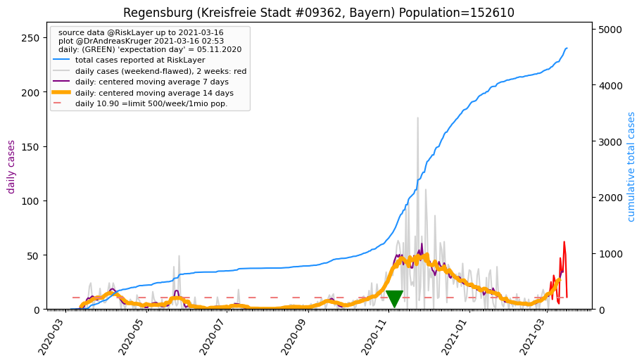
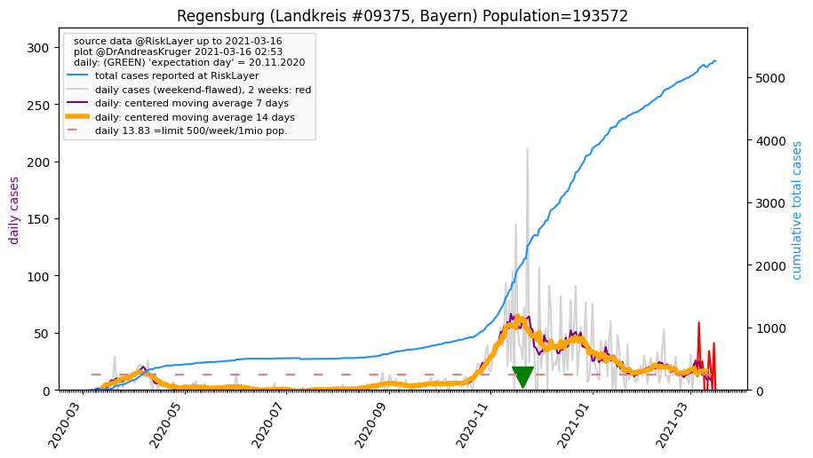
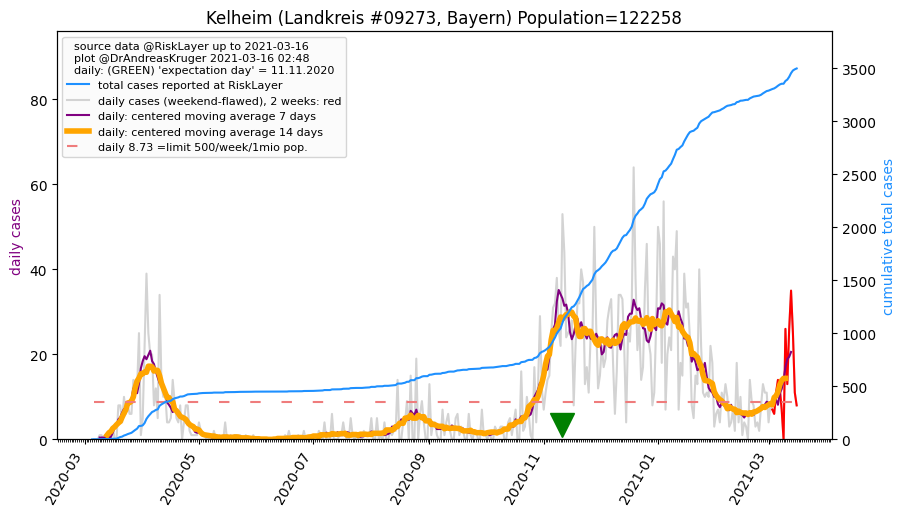
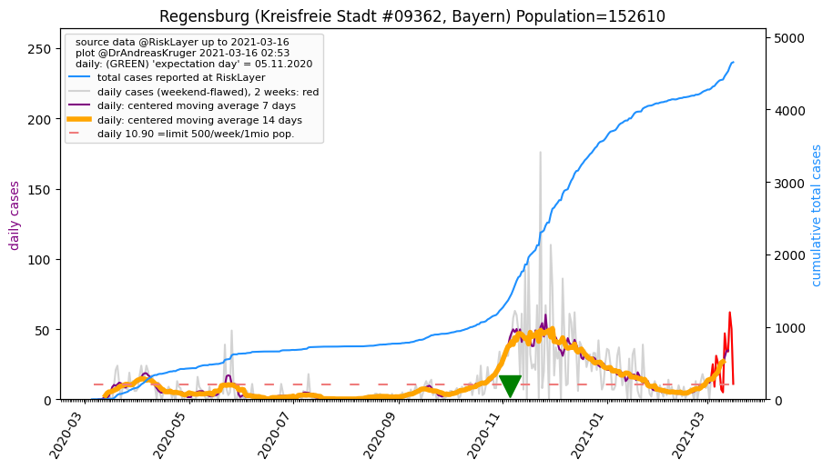
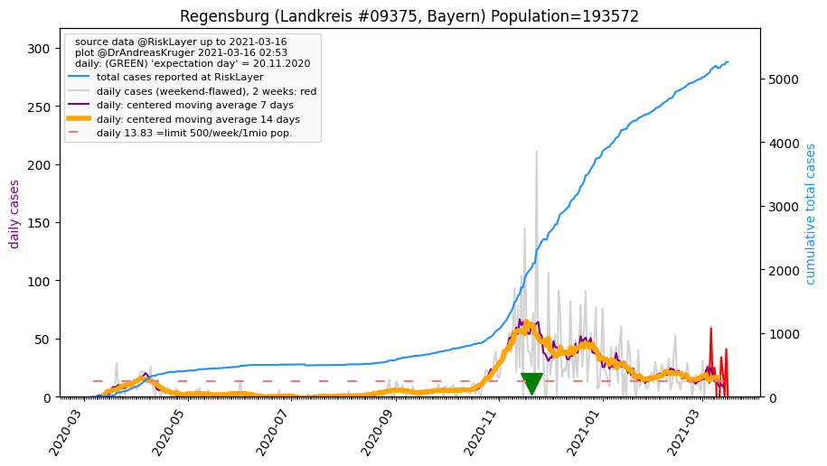
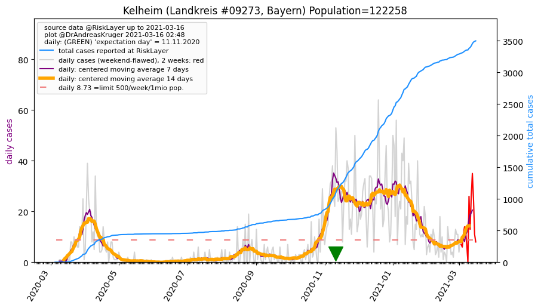

")
")
")
")
")
| Regensburg_KS (0.0 km)  |
Regensburg_LK (1.1 km)  |
Kelheim_LK (28.1 km)  |
| Straubing-Bogen_LK (36.6 km) |
Straubing_KS (36.8 km) |
Schwandorf_LK (40.8 km) |
| Neumarkt i.d. OPf._LK (45.9 km) |
Cham_LK (49.2 km) |
All plots are regenerated with new data every night. Beware this temporary hotspot is an experimental page - it might get removed, so please do not link to it. Instead link to project http://tiny.cc/cov19de.